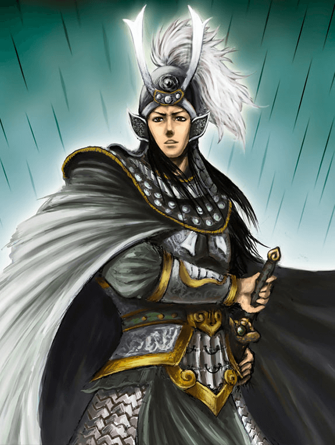
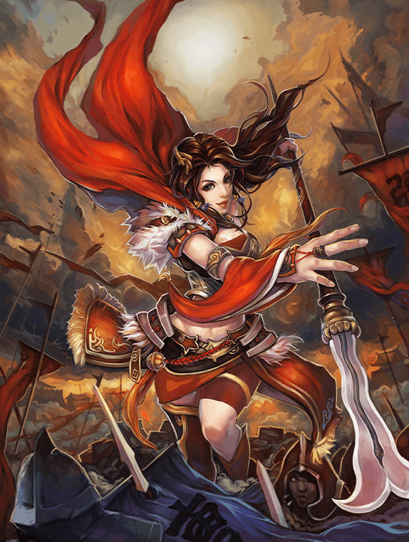

主张:第三轮单枚「背包」袋拆为并排两枚入口小件——「珍宝 5」「名将 2/3」(各带朱砂数量角标,形制同族):点珍宝开节二层,点名将开节三层;明细排退役后,牌架=手牌+双入口,顶栏珍宝/名将徽章转纯展示计数(不可点,togglePile 机制随明细排退役而消亡)。
图腾:宝石=珍宝 / 令旗=名将,取现行 AttrIcon 图形笔画化(漆金线稿),与锦囊袋同一器物语系;数量角标朱砂=计数警示语言(章恒朱砂族)。
新版牌架(左起):名将纸签(周瑜/华佗/张星彩,现行制式)|| 连环计 / 横征暴敛(锦囊手牌)|| 右端并排:「珍宝 5」「名将 2/3」双入口。点谁开谁的层——珍宝见节二,名将见节三。
第三轮单枚「背包」只装珍宝、名将仍挤在纸签行:第四轮拆为「珍宝」「名将」并排两件——珍宝与名将是两类藏品(计数/交互都不同),入口同构分层,「背包/府库」品名随第三轮稿存续或弃,随本轮拍板定。
DashboardBar 同位,样式不变、去掉点击态漆金内环)。一行设计说明:双入口不是第三轮「背包袋」的推翻而是拆分——漆金牌底、漆金描边、朱砂悬垂角标三件套原样复用,只把一枚变两枚、袋线稿换属性图腾(宝石/令旗与顶栏徽章同形,识别零学习);「2/3」分母即 HERO_CAPACITY,持有/上限一眼可读。顶栏徽章转纯展示后与入口小件形成「远读看顶栏、近看点入口」的分工,同一数字两处呈现,不出第二事实源(同读 snapshot 一字段)。
主张:点「珍宝」入口开的弹层沿第三轮府库壳,两处修正——品级角标新形制:牌右上角菱形小底 + 品级数字(底色随品级铜/银/金,与框色通道并存=色弱冗余),品级大字退役(无图回退=远山肌理沉底);曾持有区删除(UI 只显当前状态,历史归日志/战报);指导价名牌保留。
角标数字:阿拉伯(1/3/10 示例,决议原文);汉数字(壹/叁/拾)作可调项列节四拍板菜单。角标压画心右上角=器物压画非文字通道,几何实测见节四审查表。
紧凑档对照(4.8px 基,72×96)——角标在硬门槛档下的形态:菱形方边约 11px(对角 15.6px)、数字高 5.2px 为肌理档(细节归 title 浮签);悬停放大核对角标与题签净距:
一行设计说明:角标底色直接吃 --tone(铜/银/金,与距条、绫边同源)——「底色随品级」与「框色通道」天然同源,色弱用户靠「数字+位置」双冗余;菱形取「品级玺印」意象,与鉴藏印(朱砂)、数量角标(朱砂圆)构成牌角三器,各司其职(品级/鉴藏/计数)。画心双通道机制沿用第三轮(art 传节点即渲染,不传回退),仅回退内容随大字退役改为远山沉底——无图牌不再与有图牌争视觉重量,陈列的「收藏册」感反而更整。
主张:点「名将」入口开的弹层,核心交付 HeroCardFace(三国杀式布局,原「府库名将卡 vs 对局内画像卡」两套方案作废):满幅立绘打底(现役 heroes png;华佗渐变占位)+ 右侧竖排名(毛笔大字,漆金带)+ 右上称号竖排小字(实数据)+ 底部技能区(半透明纸底:印符 ●被动/◆主动 + 技名牌 + 描述全文,主动加「冷却 N 轮」)+ 左上朱砂「将」章。两档尺寸:详情档=技能全文;紧凑档=画像+名+称号+技名,desc 两行截断(招贤三选一/军师幕确认共用,见附节)。
数据边界:被动技在 heroes.ts 无技名字段(TriggerSkill 只有效果与参数),卡面不造名——被动行=● 印符+「被动」类别签+desc 全文;主动行=◆+实数据技名牌+冷却。如需被动技名(如「运筹」),先改数据表再上卡(列节四拍板可调项)。


一行设计说明:信息架构取三国杀武将卡(满幅立绘/竖排名/称号/技能区),美术不追插画、只还布局——立绘直接用现役 heroes png(零新增资产,第四轮拍板),名带用漆金语系(与入口/架首章同族)而非三国杀的黑金浮雕;朱砂「将」章压画角承接鉴藏印语义(印压画不压字)。技能区半透明纸底上叠立绘 0.9em,纱缘过渡:既保「立绘打底」的满幅感,又给技能全文一个稳定可读底。「像」占位沿用现行 onError 语言,资源到位即插即换。
主张:招贤三选一(HeroPickScroll)三张紧凑档并排替换现行横排列表——归一后全游戏名将单卡面:府库详情、军师幕确认、招贤纳士同一组件两档装配;画像缺失走既有「像」占位,快捷键 1/2/3 口径不变(G-19,角标仅展示键位)。
档位:卷轴内三选一并排用 7.6px 基(114×152,手牌槽位同档,零新档位);军师幕确认/小屏降 4.8px 基(72×96,即节四遮挡实测档)。卷轴无「不取」:必须三选其一(现行引擎守卫,UI 不变)。
一行设计说明:现行横排列表是「行」语系(画像左、文字右),与珍宝装裱牌、锦囊手牌的「卡」语系并存两套观感;换紧凑档后招贤卷轴与府库、军师幕同卡面——玩家在招贤瞬间看到的卡,就是日后在府库摩挲的同一张,「选将是收将的第一眼」情绪落地。竖排三选一改横排三卡,卷轴高度反而收窄(3×152px 一排 vs 3×80px 行列表加间距),快捷键角标挂格外右上,不与将章/名带争位。desc 截断信息不丢:卡 title 带全文(现行口径),点开详情档看技能全文。
遮挡硬门槛(决议⑤):HeroCardFace 紧凑档 72×96 与详情档逐项几何实测(playwright 一次性脚本,读 getBoundingClientRect,数值为浏览器实测净距);拍板人按节次组合拍板 + 确认可调项,拍板通过后另立施工票(流程铁律:静态稿审查通过前不动游戏组件):
| 装饰元素 | 紧凑档 72×96(4.8px 基) | 详情档 195×260(13px 基) | 判定 |
|---|---|---|---|
| 竖排名带(m-name)vs 技能区(skz) | 带底边锚定 stage 底 1.6u,与技能区上叠缘恒定脱开,实测净距 3.4px(两样本同值,几何恒定) |
同机制,实测净距 9.1px(三名将同值);名带均单列不折行(盒宽 45px) |
通过 |
| 称号签(m-title)vs 竖排名带 | 两签并排纵列(称号左、名带右,纵向各占一列不叠),横向实测净距 1.4px——不压字但余量最薄,列为拍板可调(称号签字号/位置) |
横向实测净距 5.0px(三名将同值) |
通过(紧) |
| 朱砂「将」章(j-seal) | 压立绘左上角(印压画角=鉴藏语义),与称号签横向净距 25.2px,与技能区纵向净距 45.0px,不触任何文字 |
同左:对称号签 65.9px、对技能区 76.2px |
通过 |
| 技名 chips(bd-row)vs 名带 | chips 在技能区内、名带在立绘区,纵向分层不相交;chips 行宽 58.9px < 技能区宽,单排放得下 |
不适用(详情档为技名牌行+全文两段式) | 通过 |
| desc 两行截断(紧凑档) | 实测行数 ≤2:华佗 27 字长文案恰两行截断(scrollHeight>clientHeight 判定为真截断,细节归 title 浮签);周瑜一行自然收排 |
不适用(详情档=技能全文,不截断) | 通过 |
| 立绘占比(stage 高 / 卡高) | 实测 69.3%(华佗长文案)~ 76.2%(周瑜)——达到 ~65% 目标线 |
实测 51.7%(周瑜/华佗,主动 desc 3 行)~ 58.1%(张星彩)——低于 ~65% 目标线,主因技能全文行数;如需拉高:desc 字号 0.88em→0.82em 或被动改单行流式,列拍板可调 |
通过(记录) |
| 珍宝品级角标(lv-badge)vs 题签(qian) | 陈列档实测净距 60.6~61.9px;紧凑档 36.8~37.6px——分居左上/右上两角,永不相交 |
同左(两档同构) | 通过 |
| 角标数字可读性 | 陈列档:菱形方边 17.5px(对角 24.7px)、数字高 8.2px 可读;紧凑档:方边 11px(对角 15.6px)、数字高 5.2px 入肌理档(与第三轮跋文同判),品级细节归 title 浮签;「10」双位数实测数字盒宽 4.8px(紧凑)/ 7.5px(陈列),均在菱形内接方(7.8 / 12.4px)内,无溢出 |
同左机制 | 通过(肌理档) |
| 鉴藏印/跋文(沿用第三轮修正) | 跋文右侧 2.6em 印位预留沿第三轮定稿,本轮未动;净距 5.1px(紧凑)/ 9.8px(陈列),尾字完整 | 沿用 | |
| 招贤档 114×152(7.6px 基) | 名带净距 5.3px、称号签横向净距 2.7px、键位角标(1/2/3)悬在卡格外右上不与卡面元素相交;desc 两行截断实测 ≤2 行 |
通过 | |
| 牌架双入口(节一) | 入口区与手牌行实测净距 231.5px,朱砂角标悬垂入口外上缘,不与手牌/纸签相触 |
通过 | |
public/assets/heroes/ png(周瑜/张星彩;华佗 image="" 走「像」渐变占位),纹样全程序化内联 SVG(远山/书卷/诏书/玉玺/宝石/令旗/锦囊袋);曹丕数据在册本稿未上卡(三席示例足够,资产同源可即插)